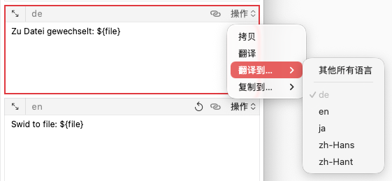

编辑区是 TransX 的内容生产核心区域，位于主窗口右侧，提供了完整的多语言文案创建和编辑功能。该区域采用表单式布局，集成了智能输入辅助、自动翻译、格式验证等多项高级功能，旨在提升本地化内容的创建效率和质量。
编辑区采用垂直布局，从上到下依次包含：
Key 是多语言文案在代码中的唯一标识符，是
NSLocalizedString 等本地化API 的第一个参数。合理的 Key
命名对于代码的可读性和维护性至关重要。
命名约定： 采用分层命名结构，清晰表达文案的用途和位置：
模块.功能.元素.动作
示例：
login.button.submit // 登录按钮-提交
trade.alert.success // 交易提示-成功
settings.label.username // 设置标签-用户名
error.network.timeout // 错误-网络-超时格式规则：
格式验证： 在项目设置中可以配置 Key 的验证规则：
点击输入框右侧的 🎲 按钮或使用快捷键 ⌘ + R 生成随机
Key：
生成策略：
生成示例：
当前分组：用户认证
模板：{group}.{type}.{random}
生成：auth.label.8f3k2d9s粘贴智能识别：
常量是代码中引用 Key 的更优雅方式，可以提供编译时检查和代码补全支持。将字符串 Key 转换为常量是一种最佳实践。
Swift 常量示例：
// Key: login.button.submit
// 常量: LOGIN_BUTTON_SUBMIT
extension String {
static let LOGIN_BUTTON_SUBMIT = "login.button.submit"
}
// 使用
Text(NSLocalizedString(.LOGIN_BUTTON_SUBMIT, comment: ""))Objective-C 常量示例：
// .h 文件
extern NSString * const LOGIN_BUTTON_SUBMIT;
// .m 文件
NSString * const LOGIN_BUTTON_SUBMIT = @"login.button.submit";
// 使用
NSLocalizedString(LOGIN_BUTTON_SUBMIT, @"")通用规范：
自定义规则： 在项目设置中配置：
k、_KEY）点击输入框右侧的 ➡️ 按钮或按下快捷键 ⌘ + T 可以自动将
Key 转换为常量：
转换规则示例：
Key → 常量
login.button.submit → LOGIN_BUTTON_SUBMIT
user.profile.edit → USER_PROFILE_EDIT
error.network.timeout → ERROR_NETWORK_TIMEOUT
settings.privacy.title → SETTINGS_PRIVACY_TITLE自定义转换脚本： 可以配置自定义的转换脚本（JavaScript）：
✅ 优秀：LOGIN_BUTTON_SUBMIT（清晰、规范）
⚠️ 可改进：BTN_LOGIN（不够描述性）
❌ 不推荐：login_button_submit（应该全大写）代码生成： 可以批量导出所有常量定义：
// LocalizationKeys.swift（自动生成）
extension String {
// MARK: - 用户认证
static let LOGIN_BUTTON_SUBMIT = "login.button.submit"
static let LOGIN_BUTTON_CANCEL = "login.button.cancel"
static let LOGIN_ERROR_INVALID = "login.error.invalid"
// MARK: - 交易
static let TRADE_BUTTON_BUY = "trade.button.buy"
static let TRADE_BUTTON_SELL = "trade.button.sell"
}分组是组织多语言文案的重要维度，合理的分组有助于团队协作和内容管理。
下拉列表：
快速创建：
这是一个强大的批量输入功能，可以一次性填充所有语言的翻译内容，极大提升了内容创建效率。特别适合配合 AI 翻译工具或外部翻译服务使用。
数据格式： 支持多种常见的多语言数据格式：
格式 1：语言代码前缀
en: Switched to file: ${file}
zh-Hans: 已切换到文件: ${file}
zh-Hant: 已切換到檔案：${file}
de: Zu Datei gewechselt: ${file}
ja: ファイルを切り替えました: ${file}格式 2：JSON 格式
{
"en": "Switched to file: ${file}",
"zh-Hans": "已切换到文件: ${file}",
"zh-Hant": "已切換到檔案：${file}",
"de": "Zu Datei gewechselt: ${file}",
"ja": "ファイルを切り替えました: ${file}"
}格式 3：CSV格式
en zh-Hans zh-Hant de ja
Submit 提交 提交 Einreichen 提出步骤 1：准备数据 使用 ChatGPT、DeepL、Google Translate 等工具翻译内容：
提示词示例：
请将以下英文翻译成中文简体、中文繁体、德语、日语，
并按以下格式输出：
en: [英文内容]
zh-Hans: [中文简体]
zh-Hant: [中文繁体]
de: [德语]
ja: [日语]
原文：Switched to file: ${file}步骤 2：复制结果 将 AI 或翻译工具输出的格式化内容复制到粘贴板。
步骤 3：一键填充
步骤 4：检查确认
语言代码识别： 支持多种语言代码标准：
多行支持： 内容可以包含换行，只要以支持的语言代码开头：
zh-Hans: 欢迎使用 TransX
这是一款强大的多语言管理工具
适用于 iOS 和 macOS 开发
en: Welcome to TransX
A powerful multilingual management tool
For iOS and macOS development如果粘贴板中有格式化的多语言内容，新建文案时会自动解析并填充。
配合翻译API：
批量导入：
语言输入区是编辑区的核心部分，为项目支持的每种语言提供独立的输入框，确保所有语言版本的文案都能被妥善编辑和管理。
每个输入框包含：
en、zh-Hans）自动布局： 可以在设置中设置最大显示个数，如果超过设定数量会采用滑动页面的展示方式。

触发条件： 当之前有修改过内容，并保存后，再次修改这条多语言文案时，右上角会显示一个 ↩︎️ 恢复按钮。
功能说明：
使用场景：
注意事项：

点击输入框右上角的功能按钮，打开操作菜单，提供针对当前输入框的快捷操作。
功能说明： 将当前输入框的内容复制到系统粘贴板。
使用场景：
功能说明： 调用配置的翻译脚本，将当前输入框的内容翻译为该输入框对应的目标语言，并自动填充到输入框中。
前提条件：
工作流程：
翻译脚本示例： https://github.com/JyHu/X/tree/main/Scripts/templates/translate
错误处理：
功能说明： 将当前输入框的内容作为源文本，翻译到其他一个或多个目标语言。
使用场景：
操作流程：
批量翻译示例：
当前输入框：en = "Submit"
选择翻译到：zh-Hans, zh-Hant, ja, de
结果：
zh-Hans: "提交"
zh-Hant: "提交"
ja: "提出"
de: "Einreichen"功能说明： 将当前输入框的内容直接复制到其他语言的输入框，不经过翻译。
使用场景：
操作流程：
示例：
场景：品牌名在所有语言中保持一致
en: "TransX"
操作：复制到所有语言
结果：
zh-Hans: "TransX"
zh-Hant: "TransX"
ja: "TransX"
de: "TransX"
功能说明： 放大单个输入框，提供更宽敞的编辑空间，特别适合处理长文本内容。
触发方式： 点击输入框左上角的放大按钮
放大模式界面：
顶部导航：
主编辑区：
预览区：（可选显示）
语言快速切换： 在放大模式下，可以使用快捷键快速切换到其他语言：
Control + ⇥：切换到下一个语言Control + Shift + ⇥：切换到上一个语言使用场景：
保存与关闭：
点击导航区的"新建"按钮进入新建模式：
从内容区选择文案进入编辑模式：